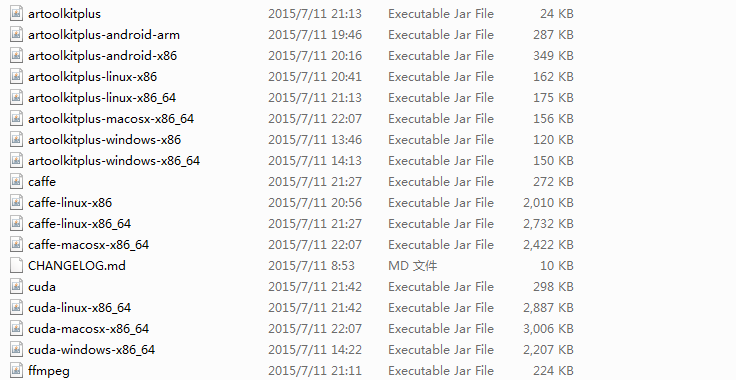

在 IBM Bluemix 云平台上开发并部署您的下一个应用。
JavaCPP 简介
JavaCPP 是一个开源库，它提供了在 Java 中高效访问本地 C++的方法。采用 JNI 技术实现，所以支持所有 Java 实现包括 Android 系统，Avian 和 RoboVM。
- Android
一种基于 Linux 的自由及开放源代码的操作系统，主要使用于移动设备，如智能手机和平板电脑，由 Google 公司和开放手机联盟领导及开发。
- Avian
Avian 是一个轻量级的 Java 虚拟机和类库，提供了 Java 特性的一个有用的子集，适合开发跨平台、自包容的应用程序。它实现非常快速而且体积小，主要特性包括如下四点：
- 类似于 HotSpot JVM 的 JIT 编译器，支持快速方法执行；
- 采用 JVM 的复制算法，即将现有的内存空间分为两快，每次只使用其中一块，在垃圾回收时将正在使用的内存中的存活对象复制到未被使用的内存块中，之后，清除正在使用的内存块中的所有对象，交换两个内存的角色，完成垃圾回收。这样可以确保内存回收过程中内存暂停服务的时间较短，并且内存的使用空间局限性较小；
- JVM 内存区域里面的本地栈快速分配，没有同步开销；
- 操作系统信号量方式解决了空指针问题，避免了不必要的分支。
- RoboVM
RoboVM 编译器可以将 Java 字节码翻译成 ARM 或者 x86 平台上的原生代码，应用可直接在 CPU 上运行，无需其他解释器或者虚拟机。RoboVM 同时包含一个 Java 到 Objective-C 的桥，可像其他 Java 对象一样来使用 Objective-C 对象。大多数 UIKit 已经支持，而且将会支持更多的框架。
总的来说，JavaCPP 提供了一系列的 Annotation 将 Java 代码映射到 C++代码，并使用一个可执行的 jar 包将 C++代码转化为可以从 JVM 内调用的动态链接库文件。
与其他技术相比，特性总结如下表 1 所示。
表 1. 类似技术介绍或特点
| 技术名称 | 技术介绍 |
|---|---|
| CableSwig | 用于针对 Tcl 和 Python 语言创建接口 |
| JNIGeneratorApp | 所有用于 SWT 的 C 代码都是通过它来创建的 |
| cxxwrap | 用于生成针对 C++的 Java JNI 包、HTML 文档、用户手册 |
| JNIWrapper | 商业版本，可以帮助实现 Java 和本地代码之间的无缝结合 |
| Platform Invoke | 微软发布的一个工具 |
| GlueGen | 针对 C 语言的一个工具，帮助生成 JNI 代码 |
| LWJGL Generator | JNI 代码生成器 |
| ctypes | 针对 Python 的接口代码生成器 |
| JNA | JNA（Java Native Access）提供一组 Java 工具类用于在运行期动态访问系统本地库（native library：如 Window 的 dll）而不需要编写任何 Native/JNI 代码。开发人员只要在一个 Java 接口中描述目标 native library 的函数与结构，JNA 将自动实现 Java 接口到 native function 的映射。 |
| JNIEasy | 替换 JNA 的一种技术 |
| JNative | Windows 版本的库 (DLL)，提供了 JNI 代码生成 |
| fficxx | 针对 haskell 模型的代码生成器，主要生成 C 语言 |
| JavaCPP | 更加自然高效，它支持大部分的 C++语法特性。目前已经能成功封装 OpenCV, FFmpeg, libdc1394, PGR FlyCapture, OpenKinect, videoInput, and ARToolKitPlus。除此之外，它还能直接把 C/C++的头文件转化成 Java 类，能自动生成 JNI 代码，编译成本地库，开发人员无需编写繁琐的 C++、JNI 代码，从而提高开发效率。 |
JavaCPP 示例
为了调用本地方法，JavaCPP 生成了对应的 JNI 代码，并且把这些代码输入到 C++编译器，用来构建本地库。使用了 Annotations 特性的 Java 代码在运行时会自动调用 Loader.load() 方法从 Java 资源里载入本地库，这里指的资源是工程构建过程中配置好的。
我们先来演示一个例子，这是一个简单的注入/读出方法，类似于 JavaBean 的工作方式。清单 1 所示的 LegacyLibrary.h 包含了 C++类。
清单 1. LegacyLibrary.h
#include <string>
namespace LegacyLibrary {
class LegacyClass {
public:
const std::string& get_property() { return property; }
void set_property(const std::string& property) { this->property = property; }
std::string property;
};
}接下来定义一个 Java 类，驱动 JavaCPP 来完成调用 C++代码。
清单 2. LegacyLibrary.java
import org.bytedeco.javacpp.*;
import org.bytedeco.javacpp.annotation.*;
@Platform(include="LegacyLibrary.h")
@Namespace("LegacyLibrary")
public class LegacyLibrary {
public static class LegacyClass extends Pointer {
static { Loader.load(); }
public LegacyClass() { allocate(); }
private native void allocate();
// to call the getter and setter functions
public native @StdString String get_property(); public native void set_property(String property);
// to access the member variable directly
public native @StdString String property(); public native void property(String property);
}
public static void main(String[] args) {
// Pointer objects allocated in Java get deallocated once they become unreachable,
// but C++ destructors can still be called in a timely fashion with Pointer.deallocate()
LegacyClass l = new LegacyClass();
l.set_property("Hello World!");
System.out.println(l.property());
}
}以上两个类放在一个目录下面，接下来运行一系列编译指令，如清单 3 所示。
清单 3. 运行命令
$ javac -cp javacpp.jar LegacyLibrary.java $ java -jar javacpp.jar LegacyLibrary $ java -cp javacpp.jar LegacyLibrary Hello World!
我们看到清单 3 最后运行输出了一行“Hello World！”，这是 LegacyLibrary 类里面定义好的，通过一个 setter 方法注入字符串，getter 方法读出字符串。
我们可以看到文件夹里面内容的变化，刚开始的时候只有.h、.java 两个文件，清单 3 所示的 3 个命令运行过后，生成了 class 文件及本地方法 (native method) 对应的.so 文件。
清单 4. 文件夹内容变化
/home/zhoumingyao/javacpp-1.0-bin/javacpp-bin [root@node1:2 javacpp-bin]# ls -lrt 总用量 348 -rw-r--r-- 1 root root 30984 7 月 11 00:59 LICENSE.txt -rw-r--r-- 1 root root 21986 7 月 11 08:52 README.md -rw-r--r-- 1 root root 31955 7 月 11 08:53 CHANGELOG.md -rw-r--r-- 1 root root 243318 7 月 11 12:20 javacpp.jar -rw-r--r-- 1 root root 285 8 月 11 16:07 LegacyLibrary.h -rw-r--r-- 1 root root 1026 8 月 11 16:13 LegacyLibrary.java -rw-r--r-- 1 root root 643 8 月 11 16:13 LegacyLibrary$LegacyClass.class -rw-r--r-- 1 root root 794 8 月 11 16:13 LegacyLibrary.class drwxr-xr-x 2 root root 4096 8 月 11 16:13 linux-x86_64 [root@node1:2 javacpp-bin]# ls -lrt linux-x86_64 总用量 36 -rwxr-xr-x 1 root root 35784 8 月 11 16:13 libjniLegacyLibrary.so
JavaCPP-Presents 简介
为了方便用户使用 JavaCPP，该项目下属有一个 presets 项目，它将一些常用的项目，例如 OpenCV、FFMpeg 等，都编译好了让用户通过调用 Jar 包的方式直接使用。当然，它也允许用户通过简便的方式上传自己做的本地库文件，通过将 jar 包上传到 Maven 仓库的方式共享给其他用户。
如果我们想要使用 JavaCPP-presents，我们需要下载 presets 源代码或者已经编译好的 jar 文件。
具体下载地址：https://github.com/bytedeco/javacpp-presets。
编译好的 jar 文件有很多，主要是 JavaCPP 支持的项目，如图 1 所示。
图 1. JavaCPP-presents binary 目录
JavaCPP Presets 模型包括了很多广泛被使用到的 C/C++类库的 Java 配置和接口类。编译器结合 C/C++的头文件，使用 org.bytedeco.javacpp.presets 包里面的配置文件来创建 Java 接口文件，这样就可以产生类似于 JNI 的库，Java 程序可以调用底层的 C/C++库。它的机制较为方便，可以被用在 Java 平台、Android 平台。
这个项目提供了两种下载方式，一种是集成了常用库的 jar 包，支持 Android、Linux Fedora、Mac OS X、Windows 等操作系统，另一种是该项目的源代码，您可以自己编译适用于自己开发环境的 jar 包，当然如果您希望针对自己的 c++工程制作 jar 包，可以采用其他方式。
如果下载的是 JavaCPP-presets 源代码包，则 Centos 环境（该环境默认不被支持）需要安装 JDK、Maven、GCC，这样才能编译项目成为需要的 Jar 包。
配置 Maven 的方式如清单 5 所示。
清单 5. Linux 上配置 Maven
1。下载 Maven 并上传到服务器，这里上传到了/root 目录下面；
2。vi /etc/profile
在最后两行加上代码：
export MAVEN_HOME=/root/apache-maven-3.1.1
export PATH=${MAVEN_HOME}/bin:${PATH}
3。source /etc/profile
4。[root@node1:2 bin]# mvn -v
Apache Maven 3.1.1 (0728685237757ffbf44136acec0402957f723d9a; 2013-09-17 23:22:22+0800)
Maven home: /root/apache-maven-3.1.1
Java version: 1.8.0_45, vendor: Oracle Corporation
Java home: /usr/share/jdk1.8.0_45/jre
Default locale: zh_CN, platform encoding: UTF-8
OS name: "linux", version: "2.6.32-504.el6.x86_64", arch: "amd64", family: "unix"如果您想要尝试完全动手编译 presets 项目，那您可以在 Maven 的 pom.xml 文件里面配置，如清单 6 所示，这样您可以下载到所有需要的代码。
清单 6. 下载全部代码
<dependency>
<groupId>org.bytedeco.javacpp-presets</groupId>
<artifactId>${moduleName}</artifactId>
<version>${moduleVersion}-1.0</version>
</dependency>JavaCPP-Presents 已经默认包含了一些开源库，例如 OpenCV、FFmpeg、FlyCapture、GSL、CUDA、Tesseract 等等，我们可以通过运行 Maven 命令来编译、构建.so 文件和 jar 文件，命令是$ mvn install --projects .,opencv,ffmpeg,flycapture,libdc1394,libfreenect,videoinput,artoolkitplus,etc.
如清单 7 所示，我们编译 ffmpeg 库，我这里只截取小部分的打印输出，都是到 Maven 仓库下载 jar 包的过程输出。
清单 7. 编译 ffmpeg 库
[root@localhost javacpp-presets]# mvn install --projects ffmpeg
[INFO] Scanning for projects...
Downloading: http://repo.maven.apache.org/maven2/org/sonatype/plugins/
nexus-staging-maven-plugin/1.6/nexus-staging-maven-plugin-1.6.pom
Downloaded: http://repo.maven.apache.org/maven2/org/sonatype/plugins/
nexus-staging-maven-plugin/1.6/nexus-staging-maven-plugin-1.6.pom (12 KB at 0.7 KB/sec)
Downloading: http://repo.maven.apache.org/maven2/org/sonatype/
nexus/maven/nexus-staging/1.6/nexus-staging-1.6.pom
Downloaded: http://repo.maven.apache.org/maven2/org/sonatype/
nexus/maven/nexus-staging/1.6/nexus-staging-1.6.pom (3 KB at 3.8 KB/sec)
Downloading: http://repo.maven.apache.org/maven2/org/sonatype/
nexus/maven/nexus-maven-plugins/1.6/nexus-maven-plugins-1.6.pom
Downloaded: http://repo.maven.apache.org/maven2/org/sonatype/
nexus/maven/nexus-maven-plugins/1.6/nexus-maven-plugins-1.6.pom (17 KB at 7.8 KB/sec)
Downloading: http://repo.maven.apache.org/maven2/org/sonatype/
buildsupport/public-parent/5/public-parent-5.pomJavaCPP-Presents 示例
讲解程序前，我们先来了解一下 cppbuild.sh 这个文件，这个脚本在根目录下面，它主要功能是被用来构建和创建本地 C++库。例如清单 8 所示，我们编译 ffmpeg 库，
清单 8. 编译 ffmpeg 库
./cppbuild.sh -platform linux-x86_64 install ffmpeg
脚本的第一个参数是-platform，值是 linux-x86_64 判断代码如清单 9 所示，如果第一个参数是-platform，那么初始化变量 PLATFORM，然后参数位移动一位到第二个参数，如果第二个参数是 install，那么初始化变量 OPERATION 为 install，如果第二个参数是 clean，初始化变量 OPERATION 为 clean。这里是 install。
清单 9. 判断平台
while [[ $# > 0 ]]; do
case "$1" in
-platform)
shift
PLATFORM="$1"
;;
install)
OPERATION=install
;;
clean)
OPERATION=clean
;;
*)
PROJECTS+=("$1")
;;
esac
shift
done确定了需要 install 操作后，程序进入实际执行阶段，如清单 10 所示。
清单 10. install 执行阶段
case $OPERATION in install) if [[ ! -d $PROJECT ]]; then echo "Warning: Project \"$PROJECT\" not found" else echo "Installing \"$PROJECT\"" mkdir -p $PROJECT/cppbuild pushd $PROJECT/cppbuild source ../cppbuild.sh popd fi
清单 10 所示代码，创建 ffmpeg/cpubuild 目录，接下来将目录压入目录栈，在当前 bash 环境下读取并执行 ffmpeg 目录下的 cpubuild.sh 中的命令，最后将目录弹出目录栈。从这里可以看出，真实执行的是 ffmpeg 目录下面的 cpubuild.sh 命令，它的代码在这里不做展开，主要执行的是一连串的 make 命令，编译 C++代码、生成.so 文件。
示例程序 1：自己写一个简单的 FFmpeg 库
我们这里所举例的例子是一个调用 FFmpeg 多媒体库的示例。FFmpeg 是一套可以用来记录、转换数字音频、视频，并能将其转化为流的开源计算机程序。采用 LGPL 或 GPL 许可证。它提供了录制、转换以及流化音视频的完整解决方案。
如果想要下载 FFmpeg 源代码或者库文件，可以在这里查找：http://ffmpeg.org/。
如果想要查看 FFmpeg 的 API，可以在这里查找：http://bytedeco.org/javacpp-presets/ffmpeg/apidocs/。
运行整个程序，我们需要三个文件，大家把这三个文件放在同一个目录下面。
首先是 C 的源代码，这里只引用一小部分，剩余的可以到 github 上看，作者是 Stephen Dranger。
清单 11. C 源代码
//
// This tutorial was written by Stephen Dranger (dranger@gmail.com).
//
// Code based on a tutorial by Martin Bohme (boehme@inb.uni-luebeckREMOVETHIS.de)
// Tested on Gentoo, CVS version 5/01/07 compiled with GCC 4.1.1
// A small sample program that shows how to use libavformat and libavcodec to
// read video from a file.
//
// Use the Makefile to build all examples.
//
// Run using
//
// tutorial01 myvideofile.mpg
//
// to write the first five frames from "myvideofile.mpg" to disk in PPM
// format.
#include <libavcodec/avcodec.h>
#include <libavformat/avformat.h>
#include <libswscale/swscale.h>
#include <stdio.h>
void SaveFrame(AVFrame *pFrame, int width, int height, int iFrame) {
FILE *pFile;
char szFilename[32];
int y;
// Open file
sprintf(szFilename, "frame%d.ppm", iFrame);
pFile=fopen(szFilename, "wb");
if(pFile==NULL)
return;
// Write header
fprintf(pFile, "P6\n%d %d\n255\n", width, height);
// Write pixel data
for(y=0; y<height; y++)
fwrite(pFrame->data[0]+y*pFrame->linesize[0], 1, width*3, pFile);
// Close file
fclose(pFile);
}
int main(int argc, char *argv[]) {
AVFormatContext *pFormatCtx = NULL;
int i, videoStream;
AVCodecContext *pCodecCtx = NULL;
AVCodec *pCodec = NULL;
AVFrame *pFrame = NULL;
AVFrame *pFrameRGB = NULL;
AVPacket packet;
int frameFinished;
int numBytes;
uint8_t *buffer = NULL;
AVDictionary *optionsDict = NULL;
struct SwsContext *sws_ctx = NULL;接下来，需要创建一个 pom.xml 文件，这样可以利用 Maven 仓库下载我们需要的 FFmpeg 库文件。pom.xml 文件内容如清单 12 所示。
清单 12. pom.xml 文件
<project> <modelVersion>4.0.0</modelVersion> <groupId>org.bytedeco.javacpp-presets.ffmpeg</groupId> <artifactId>tutorial01</artifactId> <version>1.0</version> <dependencies> <dependency> <groupId>org.bytedeco.javacpp-presets</groupId> <artifactId>ffmpeg</artifactId> <version>2.7.1-1.0</version> </dependency> </dependencies> </project>
最后是 Java 代码的实现，在这个 Java 代码里面，它会调用 FFmpeg 的库函数进行针对视频的转换，如清单 13 所示。
清单 13. Java 文件源代码
import java.io.*;
import org.bytedeco.javacpp.*;
import static org.bytedeco.javacpp.avcodec.*;
import static org.bytedeco.javacpp.avformat.*;
import static org.bytedeco.javacpp.avutil.*;
import static org.bytedeco.javacpp.swscale.*;
public class testJavaCPP {
static void SaveFrame(AVFrame pFrame, int width, int height, int iFrame)
throws IOException {
// Open file
OutputStream stream = new FileOutputStream("frame" + iFrame + ".ppm");
// Write header
stream.write(("P6\n" + width + " " + height + "\n255\n").getBytes());
// Write pixel data
BytePointer data = pFrame.data(0);
byte[] bytes = new byte[width * 3];
int l = pFrame.linesize(0);
for(int y = 0; y < height; y++) {
data.position(y * l).get(bytes);
stream.write(bytes);
}
// Close file
stream.close();
}
public static void main(String[] args) throws IOException {
AVFormatContext pFormatCtx = new AVFormatContext(null);
int i, videoStream;
AVCodecContext pCodecCtx = null;
AVCodec pCodec = null;
AVFrame pFrame = null;
AVFrame pFrameRGB = null;
AVPacket packet = new AVPacket();
int[] frameFinished = new int[1];
int numBytes;
BytePointer buffer = null;
AVDictionary optionsDict = null;
SwsContext sws_ctx = null;
if (args.length < 1) {
System.out.println("Please provide a movie file");
System.exit(-1);
}
// Register all formats and codecs
av_register_all();
// Open video file
if (avformat_open_input(pFormatCtx, args[0], null, null) != 0) {
System.exit(-1); // Couldn't open file
}
// Retrieve stream information
if (avformat_find_stream_info(pFormatCtx, (PointerPointer)null) < 0) {
System.exit(-1); // Couldn't find stream information
}
// Dump information about file onto standard error
av_dump_format(pFormatCtx, 0, args[0], 0);
// Find the first video stream
videoStream = -1;
for (i = 0; i < pFormatCtx.nb_streams(); i++) {
if (pFormatCtx.streams(i).codec().codec_type() == AVMEDIA_TYPE_VIDEO) {
videoStream = i;
break;
}
}
if (videoStream == -1) {
System.exit(-1); // Didn't find a video stream
}
// Get a pointer to the codec context for the video stream
pCodecCtx = pFormatCtx.streams(videoStream).codec();
// Find the decoder for the video stream
pCodec = avcodec_find_decoder(pCodecCtx.codec_id());
if (pCodec == null) {
System.err.println("Unsupported codec!");
System.exit(-1); // Codec not found
}
// Open codec
if (avcodec_open2(pCodecCtx, pCodec, optionsDict) < 0) {
System.exit(-1); // Could not open codec
}
// Allocate video frame
pFrame = av_frame_alloc();
// Allocate an AVFrame structure
pFrameRGB = av_frame_alloc();
if(pFrameRGB == null) {
System.exit(-1);
}
// Determine required buffer size and allocate buffer
numBytes = avpicture_get_size(AV_PIX_FMT_RGB24,
pCodecCtx.width(), pCodecCtx.height());
buffer = new BytePointer(av_malloc(numBytes));
sws_ctx = sws_getContext(pCodecCtx.width(), pCodecCtx.height(),
pCodecCtx.pix_fmt(), pCodecCtx.width(), pCodecCtx.height(),
AV_PIX_FMT_RGB24, SWS_BILINEAR, null, null, (DoublePointer)null);
// Assign appropriate parts of buffer to image planes in pFrameRGB
// Note that pFrameRGB is an AVFrame, but AVFrame is a superset
// of AVPicture
avpicture_fill(new AVPicture(pFrameRGB), buffer, AV_PIX_FMT_RGB24,
pCodecCtx.width(), pCodecCtx.height());
// Read frames and save first five frames to disk
i = 0;
while (av_read_frame(pFormatCtx, packet) >= 0) {
// Is this a packet from the video stream?
if (packet.stream_index() == videoStream) {
// Decode video frame
avcodec_decode_video2(pCodecCtx, pFrame, frameFinished, packet);
// Did we get a video frame?
if (frameFinished[0] != 0) {
// Convert the image from its native format to RGB
sws_scale(sws_ctx, pFrame.data(), pFrame.linesize(), 0,
pCodecCtx.height(), pFrameRGB.data(), pFrameRGB.linesize());
// Save the frame to disk
if (++i<=5) {
SaveFrame(pFrameRGB, pCodecCtx.width(), pCodecCtx.height(), i);
}
}
}
// Free the packet that was allocated by av_read_frame
av_free_packet(packet);
}
// Free the RGB image
av_free(buffer);
av_free(pFrameRGB);
// Free the YUV frame
av_free(pFrame);
// Close the codec
avcodec_close(pCodecCtx);
// Close the video file
avformat_close_input(pFormatCtx);
System.exit(0);
}所需要的文件创建完毕以后，可以通过 maven 命令来编译、执行程序，如清单 14 所示。
清单 14. 运行命令
mvn package exec:java -Dexec.mainClass=testJavaCPP -Dexec.args="您的视频文件"
示例程序 2：加入一个新的库
从清单 10 我们知道，最终调用的是自己 C++代码文件夹里面的 cppbuild.sh 文件，所以我们如果想要增加一个新的库，势必也需要创建该文件。总的来说，我们需要注意三点： 1. 创建一个全部小写字母组成的文件夹，这个文件夹的名称和最终生成的 JAR 包的文件名，以及 Maven 的 attifact 名称会完全一致，例如 testc++； 2. 在这个文件夹下，创建新的工程，这个工程需要包括 cppbuild.sh 文件和 pom.xml 文件，以及属于 org.bytedeco.javacpp.presets 包的 Java 的配置文件； 3. 上述 2 步到位后，发起一个请求，编译自己的代码，然后上传二进制库文件到 Maven 中央仓库，这样其他用户也可以调用您的库实现本地方法操作了。 我们以 java.util.zip 包为例，里面包含了一个 zlib 库，首先需要创建 cppbuild.sh，代码里面需要下载 zlib 源代码，如清单 15 所示。
清单 15. zlib 的 cppbuild.sh 文件源代码
#!/bin/bash # This file is meant to be included by the parent cppbuild.sh script if [[ -z "$PLATFORM" ]]; then pushd .. bash cppbuild.sh "$@" zlib popd exit fi if [[ $PLATFORM == windows* ]]; then ZLIB_VERSION=128 download http://zlib.net/zlib$ZLIB_VERSION-dll.zip zlib$ZLIB_VERSION-dll.zip mkdir -p $PLATFORM cd $PLATFORM unzip ../zlib$ZLIB_VERSION-dll.zip -d zlib$ZLIB_VERSION-dll cd zlib$ZLIB_VERSION-dll else ZLIB_VERSION=1.2.8 download http://zlib.net/zlib-$ZLIB_VERSION.tar.gz zlib-$ZLIB_VERSION.tar.gz mkdir -p $PLATFORM cd $PLATFORM tar -xzvf ../zlib-$ZLIB_VERSION.tar.gz cd zlib-$ZLIB_VERSION fi case $PLATFORM in linux-x86) CC="gcc -m32 -fPIC" ./configure --prefix=.. --static make -j4 make install ;; *) echo "Error: Platform \"$PLATFORM\" is not supported" ;; esac cd ../.. pom.xml 如清单 16 所示，最终生成 zlib 的 jar 包。
清单 16. zlib 的 pom.xml 源代码
<?xml version="1.0" encoding="UTF-8"?>
<project xmlns="http://maven.apache.org/POM/4.0.0" xmlns:xsi="http://www.w3.org/2001/XMLSchema-instance"
xsi:schemaLocation="http://maven.apache.org/POM/4.0.0 http://maven.apache.org/maven-v4_0_0.xsd">
<modelVersion>4.0.0</modelVersion>
<parent>
<groupId>org.bytedeco</groupId>
<artifactId>javacpp-presets</artifactId>
<version>0.10</version>
</parent>
<groupId>org.bytedeco.javacpp-presets</groupId>
<artifactId>zlib</artifactId>
<version>1.2.8-${project.parent.version}</version>
<packaging>jar</packaging>
<name>JavaCPP Presets for zlib</name>
<dependencies>
<dependency>
<groupId>org.bytedeco</groupId>
<artifactId>javacpp</artifactId>
</dependency>
</dependencies>
<build>
<plugins>
<plugin>
<artifactId>maven-resources-plugin</artifactId>
</plugin>
<plugin>
<artifactId>maven-compiler-plugin</artifactId>
</plugin>
<plugin>
<groupId>org.bytedeco</groupId>
<artifactId>javacpp</artifactId>
</plugin>
<plugin>
<artifactId>maven-jar-plugin</artifactId>
</plugin>
<plugin>
<artifactId>maven-dependency-plugin</artifactId>
</plugin>
<plugin>
<artifactId>maven-source-plugin</artifactId>
</plugin>
<plugin>
<artifactId>maven-javadoc-plugin</artifactId>
</plugin>
</plugins>
</build>
</project>清单 17 所示是 Java 配置文件，文件需要被放在 src/main/java/org/bytedeco/javacpp/presets 目录下面。
清单 17. zlib 的 Java 源代码
package org.bytedeco.javacpp.presets;
import org.bytedeco.javacpp.annotation.*;
import org.bytedeco.javacpp.tools.*;
@Properties(target="org.bytedeco.javacpp.zlib", value={
@Platform(include="<zlib.h>", link="z@.1"),
@Platform(value="windows", link="zdll", preload="zlib1")})
public class zlib implements InfoMapper {
public void map(InfoMap infoMap) {
infoMap.put(new Info("ZEXTERN", "ZEXPORT", "z_const", "zlib_version").cppTypes().annotations())
.put(new Info("FAR").cppText("#define FAR"))
.put(new Info("OF").cppText("#define OF(args) args"))
.put(new Info("Z_ARG").cppText("#define Z_ARG(args) args"))
.put(new Info("Byte", "Bytef", "charf").cast().valueTypes("byte").pointerTypes("BytePointer"))
.put(new Info("uInt", "uIntf").cast().valueTypes("int").pointerTypes("IntPointer"))
.put(new Info("uLong", "uLongf", "z_crc_t", "z_off_t").cast().valueTypes(
"long").pointerTypes("CLongPointer"))
.put(new Info("z_off64_t").cast().valueTypes("long").pointerTypes("LongPointer"))
.put(new Info("voidp", "voidpc", "voidpf").valueTypes("Pointer"))
.put(new Info("gzFile_s").pointerTypes("gzFile"))
.put(new Info("gzFile").valueTypes("gzFile"))
.put(new Info("Z_LARGE64", "!defined(ZLIB_INTERNAL) && defined(Z_WANT64)").define(false))
.put(new Info("inflateGetDictionary", "gzopen_w", "gzvprintf").skip());
}
}在我们的父目录 javacpp-presets 里面，我们需要把 zlib 这个模块的名称加入到 pom.xml 的模块列表里面，这样我们就可以像前面示例代码一样运行程序来生成.so 包和 jar 包，mvn install –projects zlib。
JavaCPP 性能测试
通过上面实验的实现，我们掌握了如何使用 JavaCpp，现在我们开始尝试针对 JavaCpp 的测试。
我们这个实验基于一个人脸算法库，该人脸算法库具备检测、建模、比对功能，网上有很多开源的人脸识别算法库，大家可以自行下载。当我们使用单线程时，本地预先加载人脸特征值数据，分别使用 C++代码和 Java 调用 JNI 库的方式，在内存中循环比对 1000 万次，比对测试结果如表 2 所示。
表 2. JNI 库和 C++库单线程性能比较
| 方式 | 比对次数 (万次) | 耗时/ms | 比对速率/rps（records per second） |
|---|---|---|---|
| C++ | 1000 | 11055 | 904322 |
| Java 调用 JNI 库 | 1000 | 14732 | 702592 |
| Javacpp 调用算法库 | 1000 | 13066 | 765345 |
从上面的数据可以看出，直接用 C++调用算法库效率最高，其次是 JavaCPP 方式，JNI 方式耗时最长。当然，这里没有列举的 JNA 技术，它的效率会更差。这些效率差距主要在底层字节码的编译形式上的区别。
表 2 的方式是单线程方式，我们采用多线程方式再来做一次测试，测试结果如图 2 所示。我们可以看出，多线程环境下，C++和 JavaCPP 的优势更加明显，整体效率系统接近 0.95-1，JNI 方式的效率则平均在 0.81 左右。
图 2. JNI 库和 C++库多线程性能比较
结束语
我们发现，采用 JavaCPP 方式在编程上较 JNI 方式简单很多，另外，效率也比 JNI 高，所以建议多采用 JavaCPP 技术。当然，如果是开源项目，也可以通过 JavaCPP presets 子项目来分享自己做的库文件，让其他人快速使用。最后，通过一个有针对性的性能测试案例，读者也可以了解较 JNI 技术相比 JavaCPP 的优势所在。
参考资料
学习
- 参考网站 IBM 开发者论坛 这里发布了多篇关于 JNI 的文章。
- 参考文章 较详细的介绍 JNI 作者对于 JNI 技术的介绍较为深入、详细。
- 参考网站 FFMPEG 这里详细介绍了 JavaCpp Presets 对于 FFMPEG 库的封装实现方式。
- 参考网站 JavaCPP 这里是 JavaCPP 技术的分享地点。
- 参考网站 JavaCPP Presets 这里是 Presets 子项目的技术分享地点。
- developerWorks Java 技术专区：这里有数百篇关于 Java 编程各个方面的文章。
讨论
- 加入 developerWorks 中文社区，查看开发人员推动的博客、论坛、组和维基，并与其他 developerWorks 用户交流。
条评论

快来添加第一条评论 |

IBM Bluemix 资源中心
文章、教程、演示，帮助您构建、部署和管理云应用。
-
developerWorks 中文社区
立即加入来自 IBM 的专业 IT 社交网络。
-
Bluemixathon 挑战赛
为灾难恢复构建应用，赢取现金大奖。
请 登录 或 注册 后发表评论。
注意：评论中不支持 HTML 语法